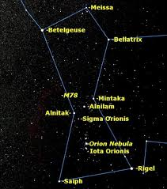
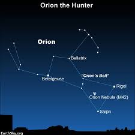
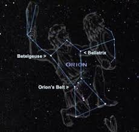

The Orion constellation is one of the most recognizable and prominent constellations in the night sky. It is named after Orion, a hunter in Greek mythology. The constellation is located on the celestial equator, making it visible from most parts of the world. Orion is best known for its distinctive "belt," which consists of three bright stars (Alnitak, Alnilam, and Mintaka) that are aligned in a straight line. The constellation also contains several other bright stars, including Betelgeuse (a red supergiant) and Rigel (a blue supergiant). In addition to its bright stars, Orion is home to several notable deep-sky objects, including the Orion Nebula (M42), a stellar nursery where new stars are being born. Orion is often associated with winter in the Northern Hemisphere, as it is most visible during the winter months.
  